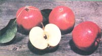

NOVEMBER
DECEMBER
It's late autumn in the garden . . . sere leaves drift from sleeping trees, soldiers of stubble mark harvested rows of corn, Winesaps ripen and fall, and - while warm afternoons occasionally stir memories of summer's heat - the morning's white rime heralds winter's chill kingdom. Draw close to your loved ones, and offer thanks together for the bounty you've stored.
One of the biggest bargains in horticulture - and one that makes a dandy Christmas gift as well - is a five-dollar membership in the North American Fruit Explorers. NAFEX is dedicated to the exchange of information - through its quarterly journal, Pomona - on growing both the rare and common fruits . . . from blueberries to papayas, peaches, and persimmons. The society also has panels of folks who are experts on many varieties of fruit, cultural topics, and techniques. NAFEX members can draw upon this wisdom and experience for just the price of a stamped, self-addressed envelope.
If you'd like to join NAFEX you can do so by sending $5.00 (the annual dues include a subscription to the magazine) to Roy Walker, Dept. TMEN, Box 711, St. Louis, Missouri 63188.
It's almost enough to make a believer out of a cynic! First we saw the government supporting Integrated Pest Management. (Copies of the USDA's Agricultural Handbook No. 512, "The Basic Principles of Insect Population Suppression and Management", may be purchased for $10 from the Superintendent of Documents, Dept. TMEN, U.S. Government Printing Office, Washington, D.C. 20402. Get your local public library to buy a copy.) Now - even more surprising - the Department of Agriculture has released a report on organic farming . . . and the agency's conclusions highly favor wholistic techniques!
"Organic farming," as defined by the USDA, "is a production system which avoids or largely excludes the use of synthetically compounded fertilizers, pesticides, growth regulators, and livestock feed additives. To the maximum extent feasible, organic farming systems rely on crop rotations, crop residues, animal manures, legumes, green manures, offfarm organic wastes, mechanical cultivation, mineral-bearing rocks, and aspects of biological pest control to maintain soil productivity and tilth, to supply plant nutrients, and to control insects, weeds, and other pests."
Using this definition in their selection process, the authors of the report visited 69 organic farms in 23 states, studied similar operations in Europe and Japan, interviewed organic farmers and "movement" spokespeople, and so forth.
The investigators reported that the organic farms, while somewhat more labor-intensive than conventional operations, used less energy . . . and - although conventional farms provided a greater economic return over variable costs than organic ones did - when the expense of the detrimental aspects of chemical-intensive farming were included in the equation, the economic advantage of conventional agriculture was reduced significantly .
Of course, the USDA has a long way to go before it meets the needs of America's organic gardeners and farmers, but the first steps are being taken. Unless the USDA reverts to the bad old days of Earl Butz, MOTHER-readers can have some hope that at least some of their tax money will be used to further - not hinder - organic agriculture. To obtain your free copy of this important study, write to Organic Farm Report, Office of Governmental Public Affairs, Dept. TMEN, USDA, Washington, D.C. 20250. Ask for publication 1980-0-310944/96, "Report and Recommendations on Organic Farming".
Now that the apple crop is in, there's one more task to be done in the orchard ... and it may even be the fruit grower's most important duty: sanitation. If you want to keep those winged and manylegged critters from chawin' on next year's fruit, now is the time to take preventive measures. And orchard cleanliness is particularly important for gardeners who wish to fight the "battle of the bug" without recourse to poisonous sprays.
The main weapon to use in your orchard's defense is the rake. Gather up all the windfall fruits and put them where they'll do some good ... in the compost pile. Remove any fruit that remains on the tree after leaf fall, too. Rake up all of the fallen leaves, and - unless they've been mildewed, in which case they should be burned - add them to the to-be-composted material.
Collect and burn all prunings (bugs love to winter-over on them) and surround the trunk of each tree with a twoto three-foot-high mouse and rabbit barrier made of half-inch mesh hardware cloth. Space the screening about three inches from the trunk. And - after the area under every fruit tree has been thoroughly cleaned up - lay down a fresh hay mulch ... about six inches deep. Start mulching a foot from the trunk, and extend outward to the tree's drip line (under the tips of the widest branches).
Now is also the time to go through the nursery catalogs to make your selections for spring planting. Commercial orchards sell out their popular kinds quickly . . . and the prized antique varieties (described in MOTHER N0. 63, page 130) are always in short supply. (Besides being sure of your first choices it you order your spring trees this fall, you stand a good chance of avoiding next year's price increases.)
Northwestern gardeners (and coastal New Englanders, too) will find a treasure house of good information in Binda Colebrook's fine paperback, Winter Gardening in the Maritime Northwest . If you're interested in having a four-season garden, you'll find minimum temperature information, recommended varieties, and an excellent section on winter gardening techniques. Send $5.00 to Tilth, Dept. TMEN, Route 2, Box 190-A, Arlington, Washington 98223. (By the way, membership in Tilth - an association devoted to organic agriculture in the Pacific Northwest - is a good buy at $8.00 a year. The gardening information in the newsletter is regional, but there's much of general interest, too.)
Finally - before the frost nips them - pot up some of those chive and parsley plants for the kitchen windowsill! There's nothing like fresh herbs on a cold winter's day.
|
|
 |
|